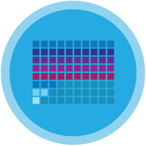

CS AP
AP Computer Science A introduces students to computer science through programming.
Fundamental topics in this course include the design of solutions to problems, the use of data
structures to organize large sets of data, the development and implementation of algorithms to
process data and discover new information, the analysis of potential solutions, and the ethical
and social implications of computing systems. The course emphasizes object-oriented
programming and design using the Java programming language.
Learning Environment
The course utilizes a blended classroom approach. The content is fully web-based, with students
writing and running code in the browser. Teachers utilize tools and resources provided by
CodeHS to leverage time in the classroom and give focused 1-on-1 attention to students. Each
unit of the course is broken down into lessons. Lessons consist of video tutorials, short quizzes,
example programs to explore, and written programming exercises. All assignments will be online and easily accessible
Google Classroom
Course Overview
|
|
This unit introduces students to the Java programming language and the use of classes, providing students with a firm foundation of concepts that will be leveraged and built upon in all future units. Students will focus on writing the main method and will start to call preexisting methods to produce output. Students will start to learn about three built-in data types and learn how to create variables, store values, and interact with those variables using basic operations. |
|
|
This unit explores the structure and design of the internet, and how this design affects the reliability of network communication, the security of data, and personal privacy. |
|
|
This unit introduces a new type of data: reference data. Reference data allows real-world objects to be represented in varying degrees specific to a programmer’s purpose. This unit builds on students’ ability to write expressions by introducing them to Math class methods to write expressions for generating random numbers and other more complex operations. In addition, strings and the existing methods within the String class are an important topic within this unit. |
Unit 4: Boolean Expressions and if Statements
|
|
This unit focuses on selection, which is represented in a program by using conditional statements. Conditional statements give the program the ability to decide and respond appropriately and are a critical aspect of any nontrivial computer program. In addition to learning the syntax and proper use of conditional statements, students will build on the introduction of Boolean variables by writing Boolean expressions with relational and logical operators. |
|
|
This unit focuses on iteration using while and for loops. This unit introduces several standard algorithms that use iteration. Knowledge of standard algorithms makes solving similar problems easier, as algorithms can be modified or combined to suit new situations. |
|
|
This unit will pull together information from all previous units to create new, user-defined reference data types in the form of classes. The ability to accurately model real-world entities in a computer program is a large part of what makes computer science so powerful. This unit focuses on identifying appropriate behaviors and attributes of real-world entities and organizing these into classes. Students will build on what they learn in this unit to represent relationships between classes through hierarchies. |
|
|
This unit focuses on data structures, which are used to represent collections of related data using a single variable rather than multiple variables. Just as there are useful standard algorithms when dealing with primitive data, there are standard algorithms to use with data structures. In this unit, students apply standard algorithms to arrays. |
|
|
In this unit, students learn about the limitations of arrays, and are introduced to a new data structure - ArrayLists. Students are asked to compare the two data structures, and implement programs that utilize each. |
|
 |
In this unit, students learn how to store data in increasingly complex ways by introducing them to the 2D arrays. Students will learn standard algorithms to utilize and search 2D arrays, as well as ways to use them effectively in their programs. |
|
|
In this unit, students will learn how to recognize common attributes and behaviors that can be used in a superclass and will then create a hierarchy by writing subclasses to extend a superclass. Recognizing and utilizing existing hierarchies will help students create more readable and maintainable programs. |
|
|
In this unit, students will learn how to write simple recursive methods and determine the purpose or output of a recursive method by tracing. |
State Competencies
SC. 1: Understand the basic principles of computer program development in order to create a foundation on which to base more complex software design.
SC. 2: Understand the fundamentals of programming languages that are critical to the creation of methods and the concept of structured programming
SC. 4: Understand the basic common algorithms of computer science to show how they affect ways to solve mathematical or programming problems.
SC. 5: Understand the basic concepts of computer networks and security to reinforce knowledge of ethical computing.
Enduring Understandings
EU. 1: The student will understand that there are multiple components of learning program languages.
EU. 2: The student will understand that certain methods of development are more efficient and effective based on expected outcomes.
EU. 3: The student will understand that algorithms are tools for developing and expressing solutions to computational problems.
EU. 4: The student will understand that different target audiences use certain platforms for particular usability.
EU. 5: The student will understand that proper planning and documenting programs allows for maintenance and sustainability.
EU. 6: The student will understand security and ethics in regards to computing.
EU. 7: The student will understand that incorporating critique and feedback into design creates more robust programs.
EU. 8: The student understands the concepts and influences of entrepreneurship as well as the effects leadership can have on personal growth and career success.